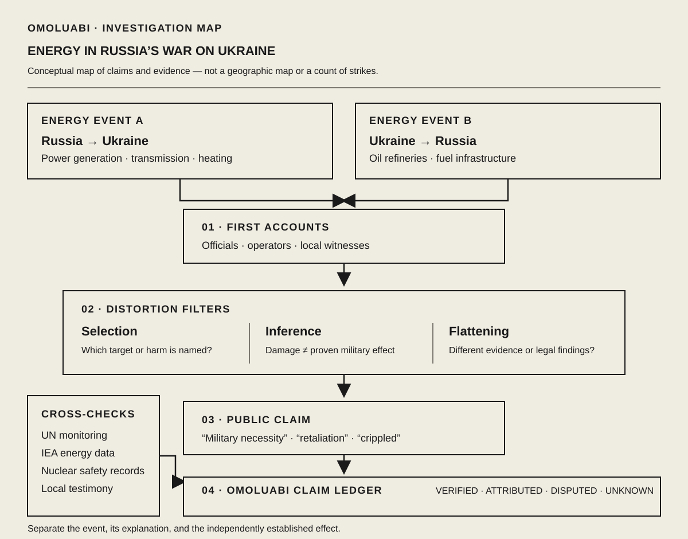

The Energy War: Power, Fuel and the Story of the Strike
Energy in Russia’s war on Ukraine is at once a survival system, a military and economic resource, and a subject of competing claims. This investigation will follow those threads while keeping each claim tied to its evidence and limits.

What the opening record establishes
The UN Human Rights Monitoring Mission in Ukraine documented repeated Russian attacks on electricity and heating infrastructure during the 2025–26 winter. Its reporting describes outages affecting electricity, heat, water, health care and schools, with older people and people with disabilities facing particular barriers.
On 26 October 2026, the UN Commission of Inquiry on Ukraine concluded that Russian authorities committed war crimes by intentionally directing attacks against civilian objects and crimes against humanity through the cumulative impact of attacks on energy infrastructure. The Commission also examined Ukrainian attacks on energy infrastructure in Russia and occupied areas, but said it could not investigate their impact further because the Russian Federation did not provide access or information.
Separately, the International Energy Agency has reported that Ukrainian drone strikes have damaged Russian refineries and contributed to lower refining throughput and domestic fuel pressure. These indicators describe the energy sector. They do not, by themselves, prove a specific effect on Russia’s military capacity or the duration of the war.
Questions this investigation will follow
- Civilian survival: How do power and heating outages affect people, health services, water, mobility, and access to information?
- Energy and war capacity: What can be established about oil revenue, sanctions, refinery damage, electricity generation, repairs, and military use?
- Nuclear safety: How do attacks and damaged grid connections affect the power and backup systems nuclear facilities rely on?
- Public claims: When officials call an attack a military necessity, retaliation, or decisive economic blow, what evidence supports that description—and what remains uncertain?
- Missing perspectives: Which affected residents, repair workers, local authorities, and independent energy experts have not yet been heard?
How Omoluabi is holding the claims
The map separates the event, the explanation attached to it, and the effect that independent records can establish. It does not treat attacks on different infrastructure, civilian consequences, or legal findings as interchangeable. Each record will be labeled verified, attributed, disputed, or unknown.
The map is conceptual, not geographic. No incident-level geospatial dataset or comparative total has been assembled for this opening publication. The page will grow as sources are checked and affected people’s accounts can be gathered safely and with consent.
Government documents in the source set
These records answer different questions. A research report, an audit, a sanctions notice, and a wartime government statement do not carry the same evidentiary weight.
- Congressional Research Service, “Attacks on Ukraine’s Electric Grid” (17 May 2024). A U.S. congressional analysis of grid attacks, cyber and physical threats, resilience, and policy lessons.
- U.S. Government Accountability Office, “Ukraine: State Should Take Additional Actions to Improve Planning for Any Future Recovery Assistance” (published 4 September 2025). Reviews recovery planning and reports attributed estimates of damage from Ukrenergo officials and other sources.
- UK Home Office, “Country policy and information note: humanitarian situation, Ukraine” (updated 22 October 2026). A recent government synthesis that cites underlying sources; follow those citations for primary evidence.
- U.S. Treasury / OFAC sanctions announcement on Rosneft and Lukoil (22 October 2025). Documents the sanctions and the U.S. government’s stated rationale, not an independent measurement of their eventual effect.
- U.S. State Department Foreign Press Center briefing with Yale Humanitarian Research Lab (4 March 2024). Government-hosted researchers distinguish high-confidence verified incidents from identified but unconfirmed cases and explain open-source limits. The findings are Yale’s, not a State Department-authored investigation.
- Cabinet of Ministers of Ukraine statement (19 October 2026). Reports an official count of 2,147 attacks since 16 July 2026. The cited passage does not define the counting method, so Omoluabi records this as an attributed claim pending independent verification.
Editorial Reasoning
Sources & Evidence
Source timeline
Image description
Read an extended description of the diagram
The diagram begins with two parallel energy-event tracks: Russian strikes on Ukrainian power generation, transmission and heating; and Ukrainian strikes on Russian oil refineries and fuel infrastructure. Both lead to first accounts from officials, operators and local witnesses. Three filters—selection, inference and flattening—show how evidence can be lost as events become public claims. A side rail lists UN monitoring, IEA energy data, nuclear safety records and local testimony as cross-checks. The final step is an Omoluabi claim ledger: verified, attributed, disputed or unknown. Arrows show the sequence. The diagram is conceptual and contains no mapped strike locations or quantitative totals.